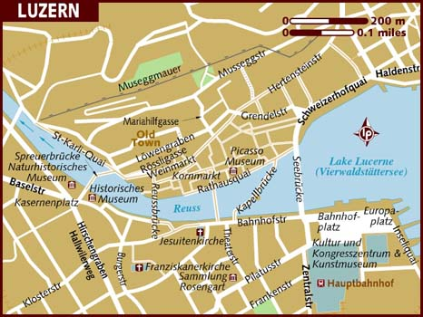
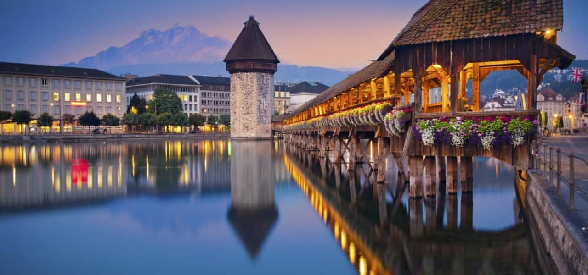

Местоположение

Люцерн е един от най-красивите швейцарски градове. Разположене в сърцето на немска Швейцария, на брега на Фирдвалдщетското езеро
(Езерото на четирите кантона). Градът е най-гъсто населеният в централния швейцарски кантон Люцерн. Намира се само на 54км. от икономическото и финансово сърце на страната - Цюрих.
История
Възникнал в началото като малко рибарско селище, Люцерн прераства във важен пункт за преминаване, особено след откриването през 1220г. на прохода Св. Готард. По време на Реформацията Люцерн е
"застанал" начело на католическата съпротива в Швейцария и е въвлечен за дълго време в политически и религиозни спорове.
Забележителности
Разположен на двата бряга на река Реус, градът разполага с всичко хубаво, с което Швейцария е популярна по света - в близост се издигат живописни планини, чисти езера, китни алпийски селаи,
тучни ливади, по които необезпокоявано пасат прословутите швейцарски крави. Над Люцерн се извисява връх Пилатус. На него са кръстени швейцарските военни учебни самолети. Името идва от
Пилан Понтийски, чието тяло според легендите било захвърлено в езеро в планината и ако го закачаш, Люцерн го чака отмъщение.

- Mt. Пилатус
- Изследване на езерото Люцерн с лодка
- Стар град
- Löwendenkmal (Паметник на лъва)
- Verkehrshaus der Schweiz (Музей на швейцарския транспорт)
- Museggmauer & Türme (градски стени и кули)
- Църква Йезуит
- Gletschergarten (ледническа градина)